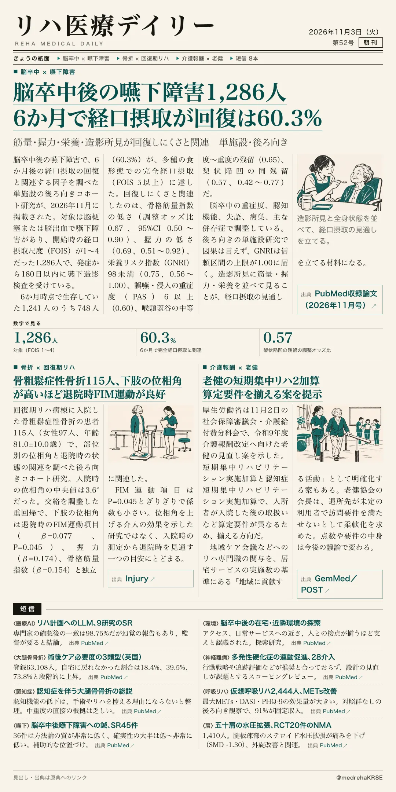
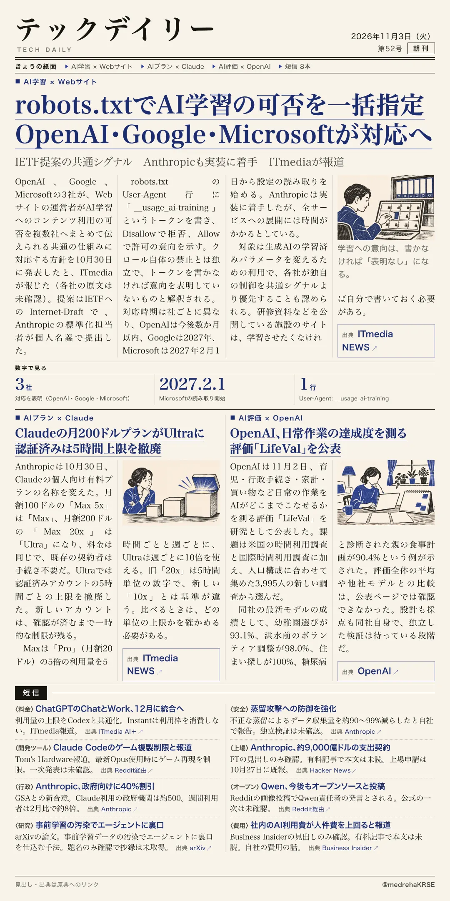

リハ医療デイリー
脳卒中後の嚥下障害1,286人 6か月で経口摂取が回復は60.3%
筋量・握力・栄養・造影所見が回復しにくさと関連 単施設・後ろ向き
造影所見だけでなく、筋量・握力・栄養も回復と関連した。

テックデイリー
robots.txtでAI学習の可否を一括指定 OpenAI・Google・Microsoftが対応へ
IETF提案の共通シグナル Anthropicも実装に着手 ITmediaが報道
クロール禁止とは別に、学習への意向を共通の書式で伝える。
